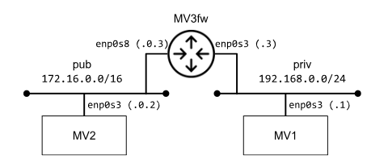

Análisis de Tráfico de Red a través de Proxies y Filtrado de Tráfico con NFTables
1. Introducción - Contexto, objetivo y especificación de la red
1.1. Contexto de este laboratorio
Este laboratorio parte de una práctica de la asignatura Seguridad en Redes, en la que inicialmente se nos pedía desarrollar un Proxy directo y configurar reglas básicas de NFTables. A partir de este proyecto, se ha ampliado el trabajo para realizar un análisis más profundo del tráfico que pasa por los proxies, observando cómo circula a través de los distintos hooks y explorando posibles formas de bypasear la configuración inicial. Para ello, se implementó primero un Proxy directo y posteriormente un Proxy inverso, con el objetivo de disponer de más información para su análisis.
1.2. Objetivo del laboratorio
El objetivo de este proyecto es familiarizarnos no solo con el uso de NFTables, sino también comprender los hooks por los que pasa un paquete dentro de un host y por donde debería o no de pasar un paquete. Además, introduciremos los conceptos de Proxy directo y Proxy inverso que nos permitirán desarrollar arquitecturas de red seguras tanto en el lado del cliente(Directo) como desde el lado del servidor(Inverso)
1.3. Especificación de la red
En esta práctica hemos usado una topología de red bastante simple en la que hay 3 dispositivos y 2 redes diferentes. Dentro de esta red habría un dispositivo que actuaría de cortafuegos/proxy y router entre las dos redes y luego otros dos dispositivos que actuarían como cliente y servidor.
Para la implementación de esta topología de red hemos usado 3 máquinas virtuales con ubuntu y xcfe(Para mayor ligereza)

Este conjunto de redes ha sido configurado mediante los comandos ip address/route/link. Por ejemplo, para configurar el firewall que tenía que ser además capaz de redirigir paquetes hacemos lo siguiente:
Configuración MV3:
sudo ip link set dev enp0s3 up // Ponemos a UP la interfaz de red enp0s3 para podernos comunicar por ahí
sudo ip link set dev enp0s8 up // Ponemos a UP la interfaz de red enp0s8 para podernos comunicar por ahí
sudo ip addr add 192.168.0.3/24 dev enp0s3 // Añadimos la dirección IPv4 192.168.0.3 con mascara de red 255.255.255.0 en la interfaz enp0s3
sudo ip addr add 172.16.0.3/16 dev enp0s8 // Añadimos la dirección IPv4 192.168.0.3 con mascara de red 255.255.0.0 en la interfaz enp0s8
sudo sysctl -w net.ipv4.ip_forward=1 // Permitimos que el host pueda hacer fordward
Por último desplegamos 2 servidores web, uno en el cliente y otro en el servidor con apache2 para ir probando las diferentes conexiones (via HTTP)
systemctl start apache2 && systemctl enable apache2 // Iniciamos y habilitamos el servicio de apache2